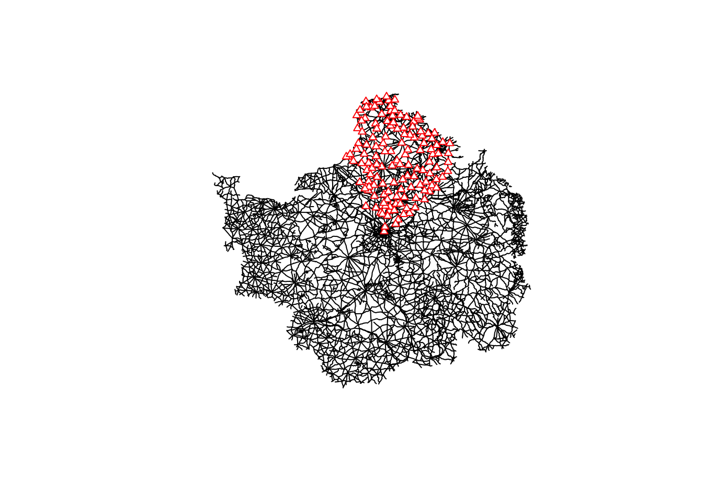
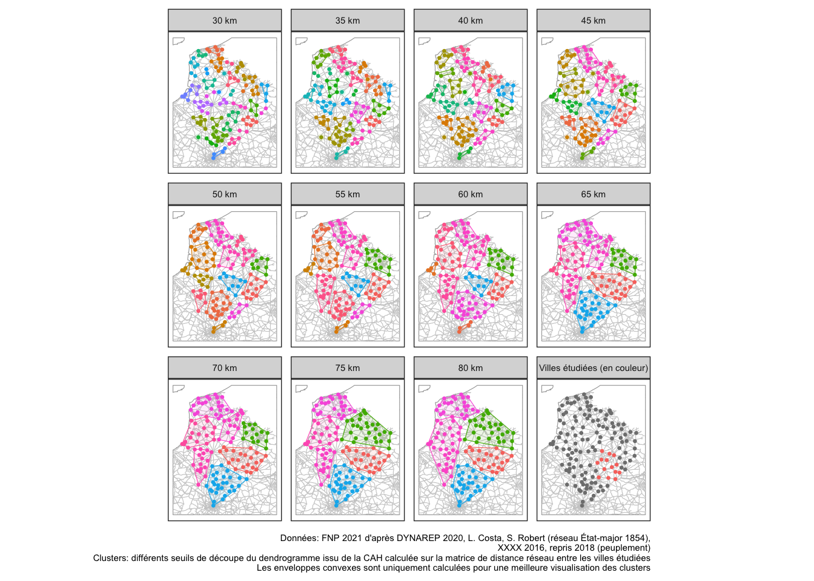
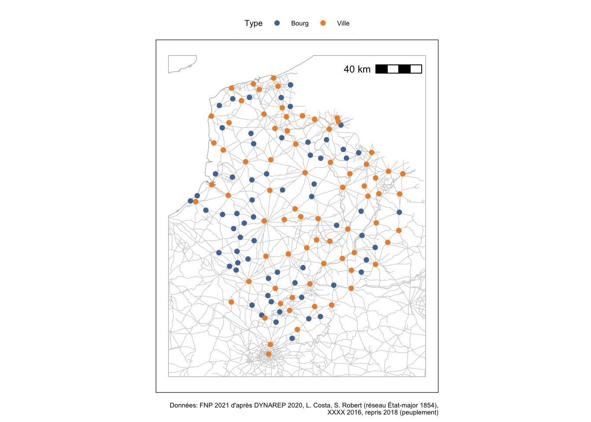
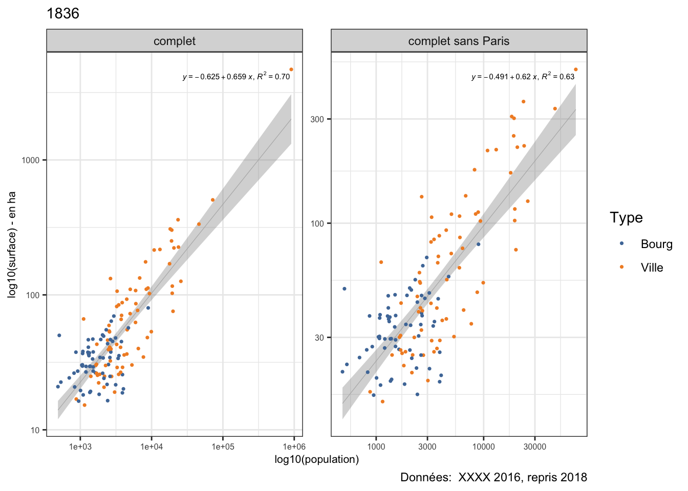
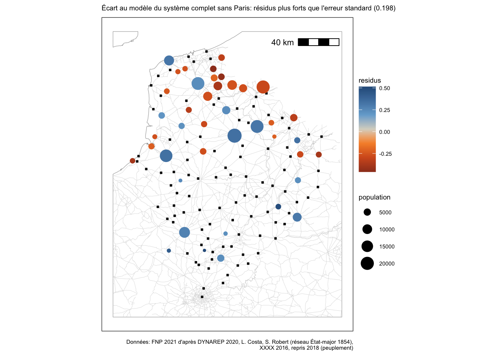
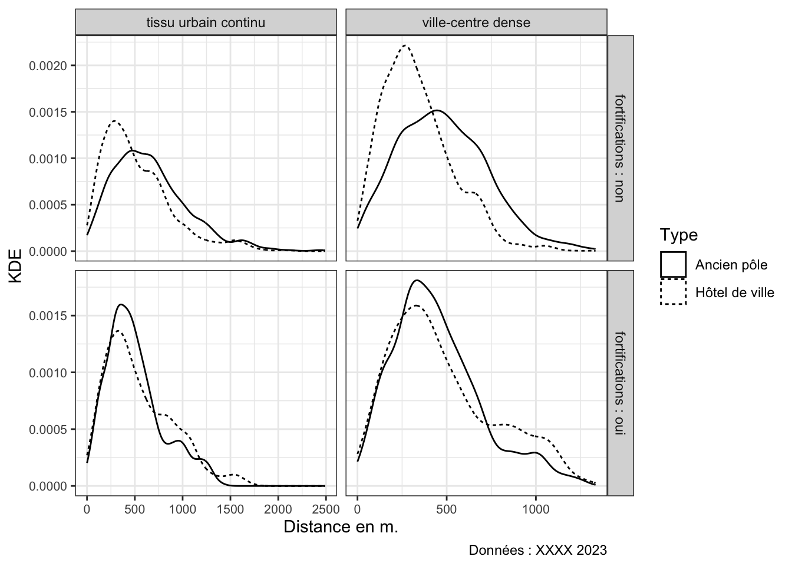
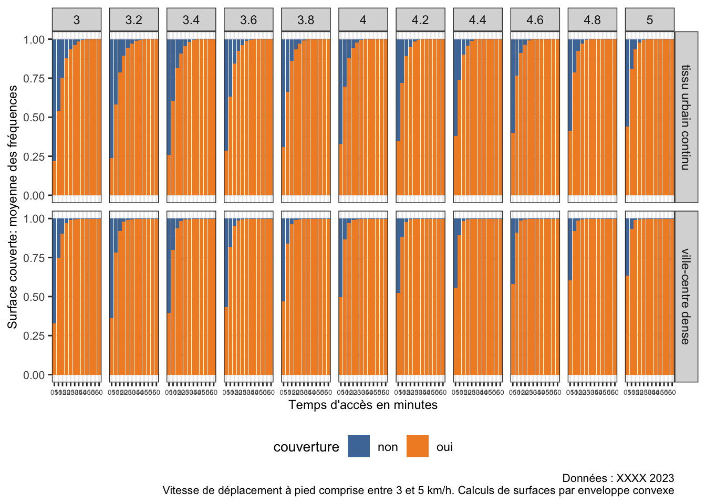
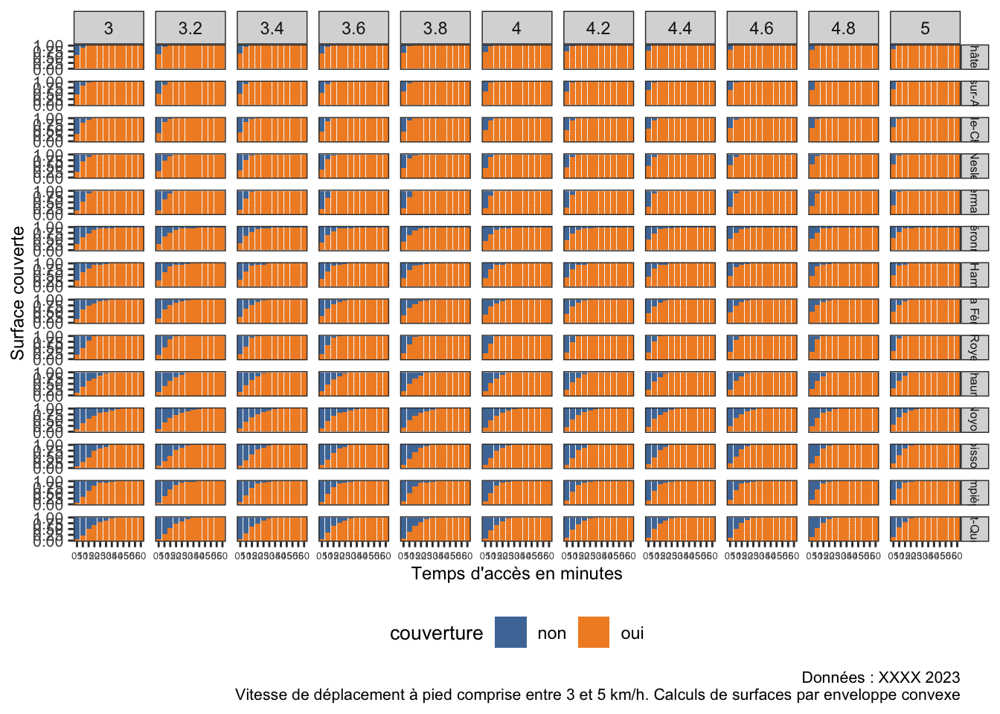

library(tidyverse)
library(sf)
library(spatstat)
library(data.table)
library(maptools)
library(ggpmisc)
library(ggspatial)
library(ggthemes)
library(readxl)
if (!require("spacetimeLPP")) remotes::install_github(repo = "soduco/space_time_lpp")
library(parallel)
library(doParallel)Supplementary material of XXXXXXXXXXX
Project overview
Libraries:
Session information:
sessionInfo()R version 4.2.0 (2022-04-22)
Platform: x86_64-apple-darwin17.0 (64-bit)
Running under: macOS Big Sur/Monterey 10.16
Matrix products: default
BLAS: /Library/Frameworks/R.framework/Versions/4.2/Resources/lib/libRblas.0.dylib
LAPACK: /Library/Frameworks/R.framework/Versions/4.2/Resources/lib/libRlapack.dylib
locale:
[1] en_US.UTF-8/en_US.UTF-8/en_US.UTF-8/C/en_US.UTF-8/en_US.UTF-8
attached base packages:
[1] parallel stats graphics grDevices utils datasets methods
[8] base
other attached packages:
[1] doParallel_1.0.17 iterators_1.0.14 foreach_1.5.2
[4] spacetimeLPP_0.0.0.9000 magrittr_2.0.3 readxl_1.4.2
[7] ggthemes_4.2.4 ggspatial_1.1.8 ggpmisc_0.5.2
[10] ggpp_0.5.2 maptools_1.1-6 sp_1.6-0
[13] data.table_1.14.8 spatstat_3.0-5 spatstat.linnet_3.1-0
[16] spatstat.model_3.2-3 rpart_4.1.19 spatstat.explore_3.2-1
[19] nlme_3.1-162 spatstat.random_3.1-5 spatstat.geom_3.2-1
[22] spatstat.data_3.0-1 sf_1.0-12 lubridate_1.9.2
[25] forcats_1.0.0 stringr_1.5.0 dplyr_1.1.2
[28] purrr_1.0.1 readr_2.1.4 tidyr_1.3.0
[31] tibble_3.2.1 ggplot2_3.4.2 tidyverse_2.0.0
loaded via a namespace (and not attached):
[1] spatstat.sparse_3.0-1 tools_4.2.0 utf8_1.2.3
[4] R6_2.5.1 KernSmooth_2.23-21 DBI_1.1.3
[7] mgcv_1.8-42 colorspace_2.1-0 withr_2.5.0
[10] tidyselect_1.2.0 compiler_4.2.0 cli_3.6.1
[13] quantreg_5.95 SparseM_1.81 scales_1.2.1
[16] classInt_0.4-9 proxy_0.4-27 goftest_1.2-3
[19] digest_0.6.31 foreign_0.8-84 spatstat.utils_3.0-3
[22] rmarkdown_2.21 pkgconfig_2.0.3 htmltools_0.5.5
[25] fastmap_1.1.1 htmlwidgets_1.6.2 rlang_1.1.1
[28] rstudioapi_0.14 generics_0.1.3 jsonlite_1.8.4
[31] polynom_1.4-1 Matrix_1.5-4 Rcpp_1.0.10
[34] munsell_0.5.0 fansi_1.0.4 abind_1.4-5
[37] lifecycle_1.0.3 stringi_1.7.12 yaml_2.3.7
[40] MASS_7.3-60 grid_4.2.0 deldir_1.0-9
[43] lattice_0.21-8 splines_4.2.0 tensor_1.5
[46] hms_1.1.3 knitr_1.42 pillar_1.9.0
[49] codetools_0.2-19 glue_1.6.2 evaluate_0.21
[52] vctrs_0.6.2 tzdb_0.4.0 Rdpack_2.4
[55] MatrixModels_0.5-1 cellranger_1.1.0 gtable_0.3.3
[58] polyclip_1.10-4 xfun_0.39 rbibutils_2.2.13
[61] e1071_1.7-13 class_7.3-22 survival_3.5-5
[64] units_0.8-2 timechange_0.2.0 Data reading:
## network
network_data <- read_sf("data/dynarep/dynarep-les-voies-dapres-la-carte-detat-major-au-1-320e-1854revu_topology.shp") %>%
st_transform(x = ., crs = 2154) %>%
st_cast(x = ., to = "LINESTRING")
## cities
etmj_cities_north_france <- readxl::read_excel(path = "data/paper/Data_EtmjPop_V2.xls", sheet = "Donnees")
## communes from dynarep
communes_dynarep <- read_sf("data/dynarep//dynarep-les-communes-dapres-la-carte-detat-major-au-1-320e-1854.shp") %>%
st_transform(x = ., crs = 2154)
## spatial data: areas of 14 specific cities
surfaces <- read_sf(dsn = "data/paper/historical_urban_centers.gpkg")
## European coastline: only for basemap
coastline <- read_sf(dsn = "data/Europe_coastline_shapefile/Europe_coastline_poly.shp") %>%
st_transform(crs = 2154)1. Selection of cities studied at the intra-urban level
1.1 Road network in 1854
The road network data were compiled from the 1:320,000 scale Etat-Major maps. It results from the research project Dynamics and Resilience of Traffic Networks in the Bassin parisien (Dynarep) led by Laurent Costa and Sandrine Robert. These data are open under ODbL license since 2021 (see data/dynarep/README.md for more information). Collaborative vectorization in the project has resulted in, among other things:
- linear geographic data related to roads (called ways in Dynarep) ;
- point geographical data of the municipalities.
The compilation of the various data blocks after collaborative editing involves some topology issues. The network data provided in the data/dynarep folder have thus been (very) slightly revised by hand in order to establish exhaustive planar network measures for the study area.
1.2 System of proximity cities: cluster calculations
Data snapping and global visualization:
## linking Dynarep points municipalities data and cities
# some municipalities were merged since 1854 so grouping and creating geometric center
# could give results a little displaced (ex: Amiens)
towns_data_points <- communes_dynarep %>%
left_join(etmj_cities_north_france, by = c('insee_com'='INSEE')) %>%
filter(!is.na(POP1836)) %>%
group_by(insee_com, nom_comm, TYPE_LIEU) %>%
summarise() %>%
st_centroid()
## snaping data points (cities) to lines (network)
snaping_data <- snapPointsToLines(points = as(object = towns_data_points, Class = "Spatial"),
lines = as(network_data, "Spatial"), maxDist = 5000)
snaping_data <- snaping_data %>%
st_as_sf(crs=2154) %>%
bind_cols(towns_data_points %>% st_drop_geometry() %>% select(nom_comm, insee_com))
## visualization
plot(network_data$geometry)
plot(snaping_data$geometry, col='red', pch=24, cex=0.75, add=TRUE)
Different clusters established from network distance calculations between cities:
## distances cut from 30km to 80km every 5km
liste_distances <- seq(30000, 80000, 5000)
## calculs
liste_sf <- list()
for (i in 1:length(liste_distances)) {
liste_sf[[i]] <- spacetimeLPP::dist_clustering(pp = snaping_data,
network = network_data,
distparam = liste_distances[i]) %>%
mutate(dist_choice = liste_distances[i])
}
liste_sf <- data.table::rbindlist(l = liste_sf) %>%
st_as_sf(crs = 2154)Data creation for better map visualization of the clusters:
## bbox creation for network and coastline croping
bbox <- st_bbox(obj = snaping_data) %>%
st_as_sfc() %>%
st_as_sf(crs = 2154) %>%
st_buffer(x = ., dist = 20000)
croping_network <- st_crop(x = network_data, y = bbox)
croping_coastline <- st_crop(x = coastline, y = bbox)
## convex hull creation for better visualisation of clusters
hull_visu <- liste_sf %>%
mutate(dist_choice=paste0(dist_choice/1000, ' km')) %>%
group_by(dist_choice, cluster) %>%
summarise() %>%
st_convex_hull(x = .)
## adding a new panel as reference of cities surveyed
villes <- surfaces %>%
st_drop_geometry() %>%
select(INSEE) %>%
mutate(dist_choice = 'Villes étudiées (en couleur)') %>%
unique()
villes <- towns_data_points %>%
left_join(x = ., y = villes, by = c('insee_com'='INSEE')) %>%
mutate(cluster = as.factor(if_else(dist_choice == 'Villes étudiées (en couleur)', 1, NA))) %>%
mutate(dist_choice = 'Villes étudiées (en couleur)') %>%
select(-insee_com)
liste_sf_visu <- liste_sf %>%
mutate(dist_choice=paste0(dist_choice/1000, ' km')) %>%
bind_rows(villes)Mapping:
ggplot() +
geom_sf(data = croping_coastline, color = 'grey65', fill = 'white', linewidth=0.2) +
geom_sf(data = croping_network, color = 'grey80', linewidth=0.2) +
geom_sf(data = hull_visu, aes(color=as.character(cluster), fill=as.character(cluster)), show.legend = FALSE, alpha=0.1) +
geom_sf(data = liste_sf_visu, aes(color=as.character(cluster)), show.legend = FALSE, size=0.5) +
theme_bw() +
theme(axis.text = element_blank(), axis.ticks = element_blank(), text = element_text(size = 7),
panel.grid.major = element_blank(), panel.grid.minor = element_blank()) +
facet_wrap(~dist_choice, nrow = 3) +
labs(caption = "Données: FNP 2021 d'après DYNAREP 2020, L. Costa, S. Robert (réseau État-major 1854),
XXXX 2016, repris 2018 (peuplement)
Clusters: différents seuils de découpe du dendrogramme issu de la CAH calculée sur la matrice de distance réseau entre les villes étudiées
Les enveloppes convexes sont uniquement calculées pour une meilleure visualisation des clusters")
# output
ggsave(filename = 'outputs/figure_4_cluster_distance_matrix.png', width = 18, height = 16, units = 'cm', dpi = 600)1.3 Rotios between dendrograms distances and distances in clusters
WARNING: the choice of the number of cores for paralleled calculations
Calculation of distances between cities in diverse clusters:
## calculating pair distances and summarized results as function
f_pair_dist_cluster <- function(input_tibble) {
lpp_object <- lpp(X = as.ppp(X = as(object = input_tibble, Class = 'Spatial')),
L = as.linnet(as(object = croping_network, Class = 'Spatial')))
pair_dist_matrix <- pairdist.lpp(X = lpp_object)
pair_dist_matrix <- pair_dist_matrix[lower.tri(x = pair_dist_matrix)]
result <- tibble(meandist = mean(pair_dist_matrix), median = median(pair_dist_matrix),
dist_choice = input_tibble$dist_choice[1],
cluster = input_tibble$cluster[1])
return(result)
}
# data split: list of every cluster for every distance HCA
liste_sf_clusters <- liste_sf %>%
group_by(dist_choice, cluster) %>%
group_split()
# parallel calculations of pair (towns) distances in clusters
nb_core <- 12
clustersdo <- parallel::makeCluster(nb_core)
doParallel::registerDoParallel(clustersdo)
liste_summary_dist <- list()
liste_summary_dist <- mclapply(X = liste_sf_clusters, FUN = f_pair_dist_cluster)
stopCluster(clustersdo)
summary_dist_clusters <- rbindlist(l = liste_summary_dist) %>%
as_tibble()Output table:
# output tibble visualization
print(x = summary_dist_clusters, n = 20)# A tibble: 179 × 4
meandist median dist_choice cluster
<dbl> <dbl> <dbl> <fct>
1 21062. 22426. 30000 1
2 25268. 20768. 30000 2
3 25169. 22308. 30000 3
4 14877. 14877. 30000 4
5 20088. 18913. 30000 5
6 17296. 17296. 30000 6
7 15969. 14492. 30000 7
8 12598. 12598. 30000 8
9 20497. 21092. 30000 9
10 22389. 20457. 30000 10
11 16756. 16756. 30000 11
12 21093. 21613. 30000 12
13 19434. 20873. 30000 13
14 18431. 14102. 30000 14
15 19705. 19612. 30000 15
16 NaN NA 30000 16
17 19461. 20276. 30000 17
18 20214. 20496. 30000 18
19 21991. 21388. 30000 19
20 14721. 14002. 30000 20
# ℹ 159 more rows# file export
write.csv(x = summary_dist_clusters, file = "outputs/summary_dist_clusters.csv", row.names = FALSE)Synthesis table:
summary_dist_clusters %>%
group_by(dist_choice) %>%
summarise(meandist = mean(meandist, na.rm = TRUE)) %>%
mutate(ratio1 = dist_choice/meandist, ratio2 = meandist/dist_choice) %>%
print()# A tibble: 11 × 4
dist_choice meandist ratio1 ratio2
<dbl> <dbl> <dbl> <dbl>
1 30000 18606. 1.61 0.620
2 35000 21000. 1.67 0.600
3 40000 24708. 1.62 0.618
4 45000 27512. 1.64 0.611
5 50000 29652. 1.69 0.593
6 55000 31761. 1.73 0.577
7 60000 34650. 1.73 0.578
8 65000 40670. 1.60 0.626
9 70000 45552. 1.54 0.651
10 75000 48455. 1.55 0.646
11 80000 52836. 1.51 0.6602. Corpus presentation
General map of cities studied:
ggplot() +
geom_sf(data = croping_coastline, color = 'grey65', fill = 'white', linewidth=0.2) +
geom_sf(data = croping_network, color = 'grey80', linewidth=0.2) +
geom_sf(data = towns_data_points %>% rename(Type = TYPE_LIEU),
aes(color=Type), show.legend = TRUE) +
scale_color_tableau(palette = "Tableau 10") +
theme_bw() +
theme(axis.text = element_blank(), axis.ticks = element_blank(), text = element_text(size = 7),
panel.grid.major = element_blank(), panel.grid.minor = element_blank(),
legend.position = 'top', legend.box.spacing = unit(x = 0, units = 'in')) +
annotation_scale(location = "tr", width_hint = 0.2,
pad_y = unit(0.3, "in"), pad_x = unit(0.2, 'in')) +
labs(caption = "Données: FNP 2021 d'après DYNAREP 2020, L. Costa, S. Robert (réseau État-major 1854),
XXXX 2016, repris 2018 (peuplement)")
# output
ggsave(filename = 'outputs/figure_2_map_138_cities.png', width = 16, height = 14, units = 'cm', dpi = 600)3. Relationships between population size and area of all cities
3.1 Overview of relationships
Function calculating linear regression and summarizing data:
# linear regression on transform log10 data and summarizing
f_relationship <- function(input_tibble){
formula_log10 <- lm(log10(x = input_tibble$area) ~ log10(x = input_tibble$pop))
summary_data <- summary(formula_log10)
output_tibble <- tibble(
y = paste0(round(summary_data$coefficients[1], 3), ' + ', round(summary_data$coefficients[2], 3), 'x'),
beta = round(summary_data$coefficients[2], 3), beta_stderror = round(summary_data$coefficients[4], 3),
r2 = round(summary_data$r.squared, 3), residuals_stderror_sigma = round(summary_data$sigma, 3),
year_pop = input_tibble$year_pop[1], system_type = input_tibble$system[1],
N = nrow(input_tibble))
return(output_tibble)
}Applying on data:
# applying analysis on diverse delineation of systems and multiple dates
etmj_cities_long <- etmj_cities_north_france %>%
pivot_longer(cols = POP1821:POP1866, names_to = "year_pop", values_to = "pop") %>%
mutate(system = 'complet') %>%
bind_rows(
etmj_cities_north_france %>%
pivot_longer(cols = POP1821:POP1866, names_to = "year_pop", values_to = "pop") %>%
filter(NOM_COMM != 'PARIS') %>%
mutate(system = 'complet sans Paris')
) %>%
bind_rows(
etmj_cities_north_france %>%
pivot_longer(cols = POP1821:POP1866, names_to = "year_pop", values_to = "pop") %>%
filter(NOM_COMM != 'PARIS') %>%
filter(TYPE_LIEU == 'Ville') %>%
mutate(system = 'villes sans Paris')
) %>%
bind_rows(
etmj_cities_north_france %>%
pivot_longer(cols = POP1821:POP1866, names_to = "year_pop", values_to = "pop") %>%
filter(TYPE_LIEU != 'Ville') %>%
mutate(system = 'bourgs')
) %>%
rename(area = AREA)
etmj_cities_long_l <- etmj_cities_long %>%
group_by(year_pop, system) %>%
group_split()
# data analysis
reg_outputs <- lapply(X = etmj_cities_long_l, FUN = f_relationship)Output table:
# output tibble visu
reg_outputs <- rbindlist(l = reg_outputs) %>%
as_tibble() %>%
arrange(system_type)
print(x = reg_outputs, n = nrow(reg_outputs))# A tibble: 12 × 8
y beta beta_stderror r2 residuals_stderror_s…¹ year_pop system_type
<chr> <dbl> <dbl> <dbl> <dbl> <chr> <chr>
1 0.838 … 0.21 0.074 0.112 0.152 POP1821 bourgs
2 0.792 … 0.221 0.077 0.117 0.151 POP1836 bourgs
3 0.831 … 0.205 0.067 0.131 0.15 POP1866 bourgs
4 -0.581… 0.656 0.04 0.668 0.211 POP1821 complet
5 -0.625… 0.659 0.037 0.699 0.201 POP1836 complet
6 -0.378… 0.573 0.036 0.653 0.215 POP1866 complet
7 -0.418… 0.607 0.043 0.595 0.207 POP1821 complet sa…
8 -0.491… 0.62 0.041 0.627 0.198 POP1836 complet sa…
9 -0.229… 0.531 0.039 0.574 0.212 POP1866 complet sa…
10 -0.83 … 0.723 0.066 0.633 0.223 POP1821 villes san…
11 -0.902… 0.733 0.061 0.676 0.21 POP1836 villes san…
12 -0.532… 0.613 0.062 0.581 0.238 POP1866 villes san…
# ℹ abbreviated name: ¹residuals_stderror_sigma
# ℹ 1 more variable: N <int># file export
write.csv(x = reg_outputs, file = "outputs/summary_reg_outputs.csv", row.names = FALSE)Visualization of complete data set and without Paris in 1836:
etmj_cities_long %>%
filter(system %in% c('complet sans Paris', 'complet')) %>%
filter(year_pop == 'POP1836') %>%
rename(Type = TYPE_LIEU) %>%
ggplot(aes(x = pop, y = area)) +
scale_x_continuous(trans = 'log10', name = 'log10(population)') +
scale_y_continuous(trans = 'log10', name = 'log10(surface) - en ha') +
ggpmisc::stat_poly_line(color = "grey70", linewidth = 0.2) +
ggpmisc::stat_poly_eq(aes(label = paste(after_stat(eq.label),
after_stat(rr.label), sep = "*\", \"*")),
size = 2, label.x = "right") +
geom_point(aes(color = Type), size = 0.6) +
ggthemes::scale_color_tableau(palette = "Tableau 10") +
facet_wrap(~system, scales = 'free') +
theme_bw() +
theme(axis.title = element_text(size = 8), axis.text = element_text(size = 6)) +
labs(caption = "Données: XXXX 2016, repris 2018", subtitle = '1836')
ggsave(filename = "outputs/figure_7_pop_area_1836.png", dpi = 600, width = 16, height = 13, units = "cm")Global evolution of population
etmj_cities_long %>%
filter(system %in% c('complet', 'complet sans Paris')) %>%
group_by(system, year_pop) %>%
summarise(N = sum(pop)) %>%
print()`summarise()` has grouped output by 'system'. You can override using the
`.groups` argument.# A tibble: 6 × 3
# Groups: system [2]
system year_pop N
<chr> <chr> <dbl>
1 complet POP1821 1216335
2 complet POP1836 1635753
3 complet POP1866 2887875
4 complet sans Paris POP1821 644563
5 complet sans Paris POP1836 726627
6 complet sans Paris POP1866 10626013.2 Analysis of residuals
Calculus for all cities without Paris in 1836:
tibble_for_residuals <- etmj_cities_long %>%
filter(system == 'complet sans Paris' & year_pop == 'POP1836')
tibble_residuals <- lm(log10(x = tibble_for_residuals$area) ~ log10(x = tibble_for_residuals$pop))
tibble_residuals <- summary(tibble_residuals)
residuals <- tibble_for_residuals %>%
bind_cols(tibble(tibble_residuals$residuals)) %>%
rename(residus = `tibble_residuals$residuals`) %>%
mutate(neg_pos = if_else(residus < 0, 'Plus dense', 'Moins dense'))
write.csv(x = residuals, file = "outputs/residuals.csv", row.names = FALSE)
residuals_sf <- towns_data_points %>%
select(insee_com) %>%
left_join(y = residuals, by = c('insee_com'='INSEE'))Visualization:
ggplot() +
geom_sf(data = croping_coastline, color = 'grey65', fill = 'white', linewidth=0.2) +
geom_sf(data = croping_network, color = 'grey80', linewidth=0.1) +
geom_sf(data = residuals_sf, fill = 'grey50', size=0.5, shape=12) +
geom_sf(data = residuals_sf %>%
rename(population = pop) %>%
filter(residus > 0.198 | residus < -0.198), # more or less than residuals SE
aes(color=residus, size = population), show.legend = TRUE) +
scale_color_gradient2_tableau() +
scale_size_area() +
theme_bw() +
theme(axis.text = element_blank(), axis.ticks = element_blank(), text = element_text(size = 7),
panel.grid.major = element_blank(), panel.grid.minor = element_blank(),
legend.position = 'right', legend.box.spacing = unit(x = 0, units = 'in')) +
annotation_scale(location = "tr", width_hint = 0.2,
pad_y = unit(0.3, "in"), pad_x = unit(0.2, 'in')) +
labs(caption = "Données: FNP 2021 d'après DYNAREP 2020, L. Costa, S. Robert (réseau État-major 1854),
XXXX 2016, repris 2018 (peuplement)",
subtitle = "Écart au modèle du système complet sans Paris: résidus plus forts que l'erreur standard (0.198)")
# output
ggsave(filename = 'outputs/figure_8_map_residuals_cities.png', width = 16, height = 14, units = 'cm', dpi = 600)4. Accessibility models
Seed for reproducibility:
set.seed(2123)Reading data:
surfaces <- read_sf(dsn = "data/paper/urban_areas.gpkg") %>%
mutate(morphology_type = if_else(morphology_type == "ville-centre dense (aplats rouge ETMJ sans éléments défensifs)", "ville-centre dense", "tissu urbain continu"))
routes <- read_sf(dsn = "data/paper/network_sections.gpkg")
centers <- read_sf(dsn = "data/paper/historical_urban_centers.gpkg")
villes <- unique(surfaces$INSEE)Adding RSS points on linear network for better spatial resolution in models and calculating cross distance matrix from centers to all points (old and new ones) on network:
distancefinal <- tibble(rowid = numeric(), V1 = numeric(), V2 = numeric(), geometry = st_sfc(),
name = character(), fortifications = character()) %>%
st_as_sf(crs=2154)
for (i in 1:length(x = villes)) {
geom_selection <- routes %>% filter(INSEE == villes[i])
network <- as.linnet(X = as(object = geom_selection %>%
select(geom),
Class = "Spatial"))
# theoretically: a point ~ every 50 meters
npoints <- as.numeric(round(x = sum(st_length(x = geom_selection$geom))/50, digits = 0))
pointsrandom <- runiflpp(n = npoints, L = network, nsim = 1)
pointsrandomxy_roads <- tibble(x = pointsrandom$data$x, y = pointsrandom$data$y) %>%
st_as_sf(x = ., coords = c("x", "y"), crs = 2154)
# xy of network lines init and random points on network
xy_roads <- tibble(x = network$vertices$x, y = network$vertices$y) %>%
st_as_sf(x = ., coords = c("x", "y"), crs = 2154) %>%
bind_rows(pointsrandomxy_roads) # adding random points
xy_roadslpp <- lpp(X = as.ppp(X = as(object = xy_roads, Class = "Spatial")),
L = network)
lppcenters <- lpp(X = as.ppp(X = as(object = centers %>% filter(INSEE == villes[i]), Class = "Spatial")),
L = network)
# cross distances between centers and points on network
distances <- crossdist.lpp(X = xy_roadslpp, Y = lppcenters)
# new tibble
titre <- geom_selection$name_INSEE[1]
fortif <- surfaces %>% filter(INSEE == villes[i])
fortif <- fortif$main_fortifications[1]
distances <- distances %>%
as_tibble() %>%
rowid_to_column() %>%
bind_cols(xy_roads) %>%
mutate(name = titre) %>%
mutate(fortifications = fortif) %>%
st_as_sf()
distancefinal <- distancefinal %>%
bind_rows(distances)
}4.1 Accessibility from different centers on network
Creation of a new sf based on cross distances with filtering the points contained in diverse type of urban areas:
point_in <- distancefinal %>%
st_join(y = surfaces %>%
rowid_to_column() %>%
filter(rowid != 2) %>%
select(-rowid) %>%
mutate(estdans = "oui"),
join = st_within) %>%
mutate(fortifications = paste0("fortifications : ", fortifications))Visualization of accessibility results:
point_in %>%
filter(estdans == "oui") %>%
pivot_longer(cols = V1:V2, names_to = "type_center", values_to = "dist") %>%
mutate(Type = if_else(condition = type_center == "V1", true = "Ancien pôle", false = "Hôtel de ville")) %>%
st_drop_geometry() %>%
ggplot(mapping = aes(x = dist, linetype = Type)) +
geom_density() +
theme_bw() +
theme(axis.text = element_text(size = 8)) +
xlab("Distance en m.") +
ylab("KDE") +
labs(caption = "Données : XXXX 2023") +
facet_grid(fortifications~morphology_type, scales = 'free')
# output
ggsave(filename = 'outputs/figure_10_accessibility.png', width = 16, height = 14, units = 'cm', dpi = 400)4.2 Accessibility from City Hall to urban margins
Model parameters: speed and duration
speed <- seq(3, 5, 0.2)
duration <- seq(5, 60, 5)Creation of spatial object containing feature points accessible from City Hall considering speed and duration parameters:
tableaufinal <- tibble(rowid = numeric(), center = character(), name = character(), geometry = st_sfc(),
duree = numeric(), speed = numeric()) %>%
st_as_sf(crs=2154)
for (d in 1:length(duration)) {
tableauvitesse <- tibble(rowid = numeric(), center = character(), name = character(), geometry = st_sfc(),
duree = numeric(), speed = numeric()) %>%
st_as_sf(crs=2154)
distancefinal <- distancefinal %>%
select(-rowid) %>%
rowid_to_column()
for (v in 1:length(speed)) {
disttemps <- (speed[v]*1000)/60*duration[d]
tableau <- distancefinal %>%
select(rowid, geometry) %>%
left_join(
distancefinal %>%
st_drop_geometry() %>%
filter(V2 <= disttemps) %>% # V2 is city hall, V1 is old center
mutate(center = "Hôtel de ville") %>%
select(rowid, center, name), by = "rowid"
) %>%
filter(!is.na(center)) %>%
mutate(duree = duration[d],
speed = speed[v])
tableauvitesse <- tableauvitesse %>%
bind_rows(tableau)
}
tableaufinal <- tableaufinal %>%
bind_rows(tableauvitesse)
}Calculating convex hull of points grouping by speed/duration parameters:
`summarise()` has grouped output by 'duree', 'name', 'speed'. You can override
using the `.groups` argument.Intersecting new polygons (convex hulls) and spatial polygons of cities:
finalintersections <- tibble(duree = numeric(), speed = numeric(), name = character(),
morphology_type = character(), size_percent = numeric())
for (i in 1:length(x = villes)) {
intersections <- st_intersection(x = sffinalconvexhull, y = surfaces %>%
filter(INSEE == villes[i]) %>%
mutate(area = st_area(x = .)/10000))
intersections <- intersections %>%
mutate(area_intersection = st_area(x = .)/10000) %>%
st_drop_geometry() %>%
mutate(size_percent = as.numeric(area_intersection/area)) %>%
select(duree, speed, name, morphology_type, size_percent)
finalintersections <- finalintersections %>%
bind_rows(intersections)
}Visualization:
finalintersections %>%
mutate(couverture = "oui") %>%
bind_rows(
finalintersections %>%
mutate(couverture = "non") %>%
mutate(size_percent = 1-size_percent)) %>%
mutate(duree = as.character(duree)) %>%
mutate(duree = if_else(duree == 5, "05", duree)) %>%
group_by(across(c(-name,-size_percent))) %>%
summarise(mean_size = mean(size_percent)) %>%
ggplot(mapping = aes(x = duree, y = mean_size, fill = couverture)) +
ggthemes::scale_fill_tableau() +
geom_bar(stat = "identity") +
theme_bw() +
theme(axis.text.x = element_text(size = 5),
axis.text.y = element_text(size = 8),
axis.title = element_text(size = 9),
title = element_text(size = 10), legend.position = 'bottom') +
ylab("Surface couverte: moyenne des fréquences") +
xlab("Temps d'accès en minutes") +
labs(caption = "Données : XXXX 2023
Vitesse de déplacement à pied comprise entre 3 et 5 km/h. Calculs de surfaces par enveloppe convexe") +
facet_grid(morphology_type~speed)`summarise()` has grouped output by 'duree', 'speed', 'morphology_type'. You
can override using the `.groups` argument.
ggsave(filename = "outputs/figure_11_accessibility_model_new_center.png", width = 40, height = 20, units = "cm", dpi = 400)Same visualization but differencing cities:
finalintersections %>%
mutate(couverture = "oui") %>%
bind_rows(
finalintersections %>%
mutate(couverture = "non") %>%
mutate(size_percent = 1-size_percent)) %>%
left_join(x = ., y = surfaces %>%
filter(morphology_type == "tissu urbain continu") %>%
select(name_insee),
by = c("name" = "name_insee")) %>%
st_as_sf() %>%
mutate(reordering_by_size = as.numeric(st_area(.)/10000)) %>% # en ha
st_drop_geometry() %>%
mutate(duree = as.character(duree)) %>%
mutate(duree = if_else(duree == 5, "05", duree)) %>%
# uniquement le tissu urbain continu
filter(morphology_type == "tissu urbain continu") %>%
group_by(across(c(-morphology_type,-size_percent))) %>%
summarise(mean_size = mean(size_percent)) %>%
ggplot(mapping = aes(x = duree, y = mean_size, fill = couverture)) +
ggthemes::scale_fill_tableau() +
geom_bar(stat = "identity") +
theme_bw() +
theme(axis.text.x = element_text(size = 5),
axis.text.y = element_text(size = 8),
axis.title = element_text(size = 9),
title = element_text(size = 10),
strip.text.y = element_text(size = 6),
legend.position = 'bottom') +
ylab("Surface couverte") +
xlab("Temps d'accès en minutes") +
labs(caption = "Données : XXXX 2023
Vitesse de déplacement à pied comprise entre 3 et 5 km/h. Calculs de surfaces par enveloppe convexe") +
facet_grid(reorder(name, reordering_by_size)~speed)`summarise()` has grouped output by 'duree', 'speed', 'name', 'couverture'. You
can override using the `.groups` argument.
ggsave(filename = "outputs/figure_12_accessibility_model_new_center_cities.png", width = 40, height = 30, units = "cm", dpi = 400)